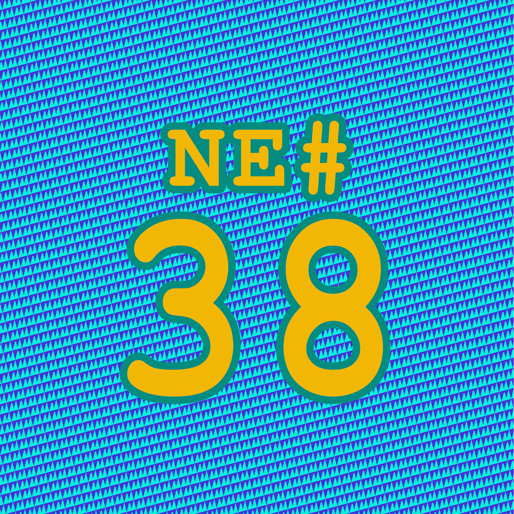

Die Nerd Enzyklopädie 38 - Du Idiot
Du Idiot

You fool. You absolute, unmitigated, unadulterated, complete and utter, fool” [GIST2]
Das ist die unverblümte, ungeschönte und zeitlose Reaktion von Robert J. Hansen, einem Entwickler von OpenPGP, nach einen Angriff auf das SKS - Netzwerk. Er richtet sich damit an diejenigen, die diesen Angriff zu verantworten haben.
Das SKS-Netzwerk (Synchronizing Key Server) speichert öffentliche Schlüssel, die sich z.B. für die vertrauenswürdige Kommunikation über E-Mail nutzen lassen. Die Server nutzen dazu eine in OCaml entwickelte Software, die von Yaron Minsky im Rahmen einer Doktorarbeit geschrieben wurde und eigentlich nur als Proof Of Concept gedacht war.
Die Programmiersprache ist nicht sehr weit verbreitet, die Software sehr komplex und damit nur schwer zu warten. Das System ist also weder für den produktiven Einsatz noch für hohe Belastungen ausgelegt — eben ein Proof Of Concept [SECU1].
Und es gab Probleme, die schon seit Jahren bekannt waren. So durfte man beliebig viele, auch irrelevante, Informationen ungeprüft auf den Server laden, die dann nicht mehr gelöscht werden konnten.
Eine Software, die kaum gewartet und optimiert wird, die Teil einer kritischen Infrastruktur ist, mit bekannten Sicherheitslücken — was kann da schon schief gehen?
Das zeigte sich im Sommer 2019. Unbekannte nutzten die Schwachstelle aus und überfluteten die öffentlichen Schlüssel von Robert J. Hansen und Daniel Kahn Gillmor, ebenfalls Open-PGP Entwickler, mit Spam. So zwangen sie das veraltete System in die Knie und Programme, die darauf angewiesen waren, konnten nicht mehr verwendet werden [FIFT1]. Ein absehbarer Super-GAU, auf den Hansen in einem relativ langen, ikonischen Kommentar auf GitHub entsprechend ungehalten reagiert.